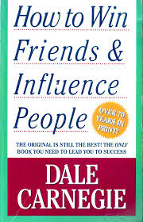
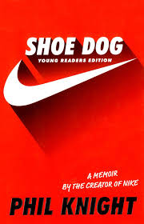
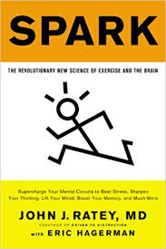
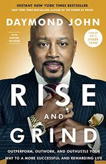
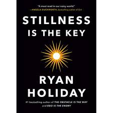

My Favorite 5 Books I've Read
- How to Win Friends and Influence People, by Dale Carnegie
- 
- Shoe Dog, by Phil Knight
- 
- Spark: The Revoutionary New Science of Exercise and the Brain, by John Ratey
- 
- Rise and Grind, by Daymond John
- 
- Stillness is the Key, by Ryan Holiday
- 
Other Great Books I'd Recommend
What Every Body is Saying, by Joe Navarro
The Obstacle is the Way, Ryan Holiday
Atomic Habits, by James Clear
Good Strategy/Bad Strategy, by Richard Rumelt
Ego is the Enemy, by Ryan Holiday
Brain Rules: 12 Principles for Surviving and Triving at Work, Home, and School, by John Medina
The Power of Habit: Why We Do What We Do in Life and Business, by Charles Duhigg
Deep Work: Rules for Focused Sucess in a Distracted World, by Cal Newport
How to Become a Straight-A Student, by Cal Newport
How Champions Think: In Sports and in Life, by Dr. Bob Rotella
The 50th Law, by 50 Cent and Robert Greene
The Defining Decade: Why Your Twenties Matter, by Meg Jay
How to Be a Gentleman: A Timely Guide to Timeless Manners, by John Bridges
Unfu*k Yourself: Get Out of Your Head and into Your Life, by Gary John Bishop
The Subtle Art of Not Giving a F*ck, by Mark Manson
Million Dollar Habits, by Stellan Moreira
The Information: A History, A Theory, A Flood, by James Gleick
The Personal MBA: Master the Art of Business, by Josh Kaufman
Astrophysics for People in a Hurry, by Neil DeGrasse Tyson
My Reading Tendencies
I decided to try something new and picked a book up to read for fun two summers ago (2018). I ended up really enjoying it and soon found out it was a passion of mine. My favorite types of books are ones where I can learn something, with a goal to read a chapter everyday. My favorite subjects consist of: Psychology, Business, and Motivational.